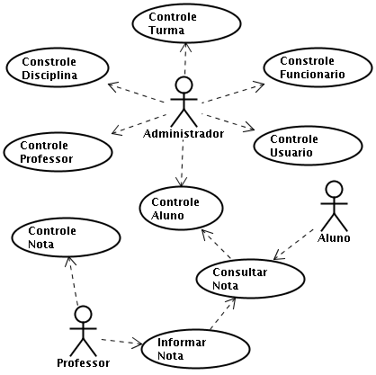

FrameworkDemoiselle.gov.br
Community Documentation
Anterior
Próxima
Capítulo 3. Caso de Uso
3.1. Caso de Uso
3.1. Caso de Uso

Anterior
Capítulo 2. Funcionalidades Utilizadas
Acima
Principal
Próxima
Capítulo 4. Camadas